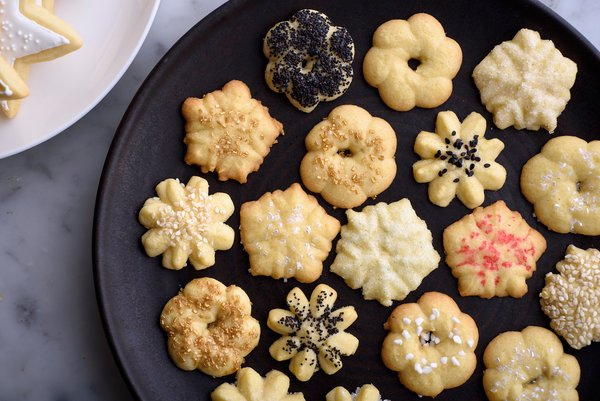
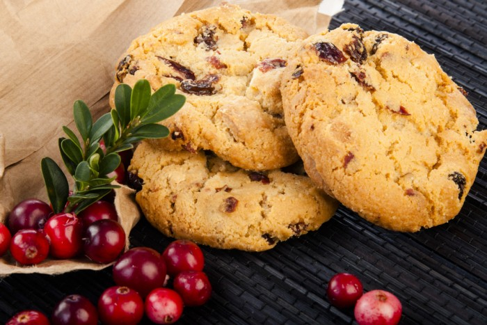
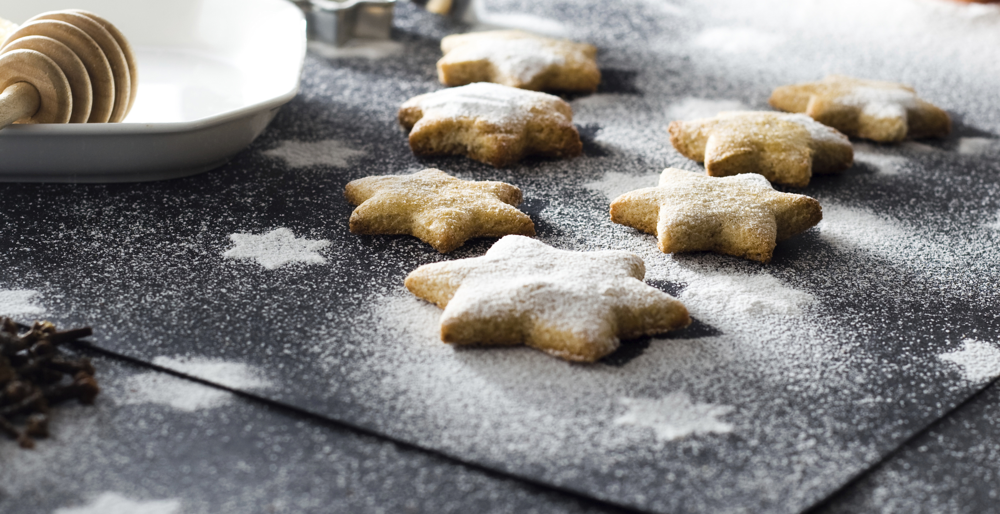
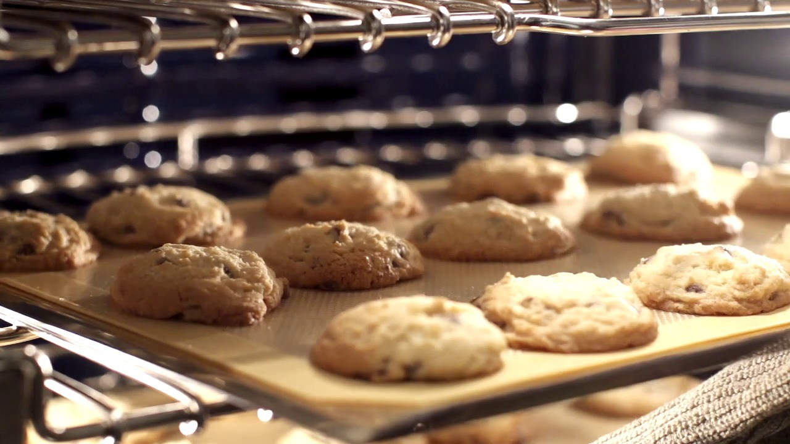

"Солодке печиво"



Смачна домашня випічка - це просто!

Нині у супермаректі чи й у невеличкій крамничці Вам запропонують чималий асортимент кондитерських виробів на будь-який смак. Там можна знайти усе: від велитенських тортів, до крихітних тістечок, від звчиайного шоколаду до цукерок, які є справжніми витворами мистецтва.
Проте найсолодші спогади завжди родом із дитинства, а кожна мама, принаймні час від часу хоче почастувати своїх дітей ( незалежно від їнього віку чимось асболютно ексклюзивним - створеним власними руками за якимось незвичайним рецептом.
Ексклюзивні поради у нас!
Ця сторінка буде добрим порадником у такій справі. Тут зібрано багато корисних господарських порад, правил приготування різних видів тіста та оздоблення виробів, наведено порівняльні маси і міри деяких продуктів, а на фото показано як оздоблювати готові вироби . Крім того подано декілька рецептів у яких вказано набір продуктів та опис техноголічного процесу приготування різних виробів з тіста
Опануйте і ви мистецтво створення смачного печива, доброго настрою та домашнього затишку!

© Lviv Polytechnic National University - Marta Liushniak